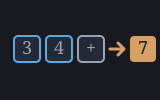

A reckoner seed: fin's time value of money, loans, capital budgeting, depreciation and payroll — machines/seeds/seedfin.shoddy
seedfin bridges fin's rates, time
value of money, growth, statistics, budgeting, loan amortization and
payoff, NPV/IRR/payback, CAGR/ROI, dollar-cost averaging, margin and
markup, break-even, payroll and depreciation. Per R4.16 there is no RECORD
cell at the keyboard: every Fin* record fin.shoddy returns is
a dict here, the same LIST-of-PAIR shape seeddict
already established, one entry per field.
Several words pre-flight a condition fin.shoddy itself Errors on rather
than let it abort: FINNPER and, through it,
FINCARDPAYOFF/FINEXTRAPAYOFF, refuse a payment
that never clears the interest; FINIRR refuses when the
cash-flow bracket shows no sign change; FINMIRR refuses with no
negative cash flow to finance; FINCARDMINPAYOFF refuses a
minimum rate at or below the periodic interest rate, which makes non-payoff
certain rather than merely possible.
fin carries a second subsystem — a calendar, and a bond pricer built on
it — and it is bridged in full. A date is a dict like every other record
here: { ("yr" n) ("mon" n) ("day" n) }, built by
FINDATE and read back by FINDATESHOW as
"2025-01-31". FINDATEOF parses that same spelling,
so a date can be typed either way round and a tape reads as prose.
The day-count bases and coupon frequencies are words rather than
numbers to remember. fin spells them as zero-argument definitions because
Shoddy has no enum; the same choice here means a session reads
"S" RCL "M" RCL 0.05 P FINSEMI FIN360 FINYTM rather than
… 2 1 …, and a mistyped basis is an unknown word instead of a
wrong answer.
Almost nothing here aborts on bad input, which is exactly the
problem. FinSerial is integer arithmetic with no opinion about
whether a date exists: FinDate(2025, 2, 30) serializes perfectly
happily to the 2nd of March, and FinDate(2025, 13, 1) to January
2026. FinYearFrac falls through to actual/365.25 for any basis
it does not recognise. FinLastCoupon steps back by
12 / freq whole months whether or not that divides evenly.
Every one of those is a wrong answer rather than a
refusal, and a wrong answer about money is the failure this whole seed layer
exists to prevent. So FINDATE checks the calendar, every word
that takes a date checks it again on the way in — a dict can also arrive
hand-built — and the basis, the frequency and the yield are each refused
when they are outside what the arithmetic underneath can mean.
The one genuine abort is FinYtm's, when no yield between 0
and 2 prices the bond. It is guarded the way FINIRR's twin
already is: the same test asked first, and refused instead.
A five percent bond, paying twice a year, settling on a coupon date five years before it matures. At a yield equal to its coupon it must be worth exactly par, which is the arithmetic anyone can check:
> 2025 1 15 FINDATE "S" STO 2030 1 15 FINDATE "M" STO
ok: S
ok: M
[ empty ]
> "S" RCL "M" RCL FINSEMI FINCOUPONSBEFORE
x: 10
> "S" RCL "M" RCL 0.05 0.05 FINSEMI FIN360 FINBONDPRICE
x: 100
> "S" RCL "M" RCL 0.05 0.08 FINSEMI FIN360 FINBONDPRICE
x: 87.83365633
> "S" RCL "M" RCL 0.05 100 FINSEMI FIN360 FINYTM
x: 0.05
> "S" RCL "M" RCL 0.05 0.05 FINSEMI FINMDUR
x: 4.376031965
> "S" RCL 2024 7 15 FINDATE 0.05 FINSEMI FIN360 FINACCRUED
x: 2.5The calendar underneath it, including the month-end clamp that a hand-rolled date library always gets wrong:
> 1970 1 1 FINDATE FINSERIAL
x: 0
> 2025 1 31 FINDATE 1 FINDATEADDMONTHS FINDATESHOW
x: "2025-02-28"
> 2024 1 31 FINDATE 1 FINDATEADDMONTHS FINDATESHOW
x: "2024-02-29"
> 2025 3 1 FINDATE -45 FINDATEADD FINDATESHOW
x: "2025-01-15"
> 2025 1 1 FINDATE 2026 1 1 FINDATE FIN360 FINDATEDIFF
x: 360
> 2025 1 1 FINDATE 2026 1 1 FINDATE FINACTUAL FINDATEDIFF
x: 365And the refusals, every one of which would otherwise have been a number:
> 2025 2 30 FINDATE
?: FINDATE: 2/2025 HAS 28 DAYS, SO THERE IS NO DAY 30
> 2025 1 1 FINDATE 2026 1 1 FINDATE 9 FINYEARFRAC
?: FINYEARFRAC: THAT IS NOT A DAY-COUNT BASIS — USE FINACTUAL, FIN360 OR FIN365
> "M" RCL "S" RCL 0.05 0.05 FINSEMI FIN360 FINBONDPRICE
?: FINBONDPRICE: SETTLEMENT MUST FALL BEFORE MATURITY
> "S" RCL "M" RCL 0.05 5000 FINSEMI FIN360 FINYTM
?: FINYTM: NO YIELD BETWEEN 0 AND 2 PRICES THIS BOND AT 5000| Group | Words |
|---|---|
| Rates, conversion | FINPCT FINASPCT FINEFF FINNOM FINRULE72 FINREAL FINPCTCHG FINTOBPS FINFROMBPS |
| Time value of money | FINPV FINFV FINPVANN FINFVANN FINPVANNDUE FINFVANNDUE FINPMT FINPMTDUE FINNPER FINSIMPLE FINCOMPOUND |
| Statistics | FINSUM FINSMEAN FINSTDDEV FINSTDDEVP FINSVAR FINVARP FINSMEDIAN FINSQUANTILE FINSMIN FINSMAX FINSRANGE FINSKEWNESS FINKURTOSIS FINWEIGHTEDMEAN FINGEOMEAN FINCORREL FINCOV FINSPEARMAN FINNORMP FINTDIST FINSTAT1 |
| Budgeting, saving, investing | FINGOALPMT FINRETIRE FINNETWORTH FINBUDGETOF FINDCAOF |
| Loans: amortization, payoff | FINBALANCE FINAMORTAT FINSCHEDULE FINEXTRAPAYOFF FINCARDPAYOFF FINCARDMINPAYOFF |
| Capital budgeting | FINNPV FINNPVOF FINIRR FINNFV FINMIRR FINPAYBACK FINPAYBACKDISC |
| Growth, margin, break-even, payroll, depreciation | FINCAGR FINROI FINRSTAT FINYIELD FINDIVGROWTH FINMARGINOF FINMARKUPOF FINSELLFROMMARGIN FINCOSTFROMMARGIN FINBREAKEVENOF FINPAYROLLOF FINSL FINSLBOOK FINSYD FINDB FINFACT FINCOMB FINPERM |
| Bases and frequencies | FINACTUAL FIN360 FIN365 FINANNUAL FINSEMI FINQUARTERLY |
| The calendar | FINDATE FINDATESHOW FINDATEOF FINISLEAP FINDAYSINMONTH FINSERIAL FINFROMSERIAL FINDATEADD FINDATEADDMONTHS FINDAYS360 FINDATEDIFF FINYEARFRAC |
| Bonds | FINCOUPONSBEFORE FINLASTCOUPON FINACCRUED FINBONDPRICE FINYTM FINMDUR |
The calendar and the bonds in full, since both are new here and neither reads like the rest of the seed:
| Word | Description |
|---|---|
| FINDATE ( y m d -- date ) | A date as a dict: yr, mon, day. Refuses anything the calendar does not have, such as the 30th of February. |
| FINDATESHOW ( date -- str ) | A date written out as "YYYY-MM-DD". |
| FINDATEOF ( str -- date ) | The other way: "2025-01-31" read back into a date. |
| FINISLEAP ( y -- flag ) | Whether a year is a leap year, century rules included. |
| FINDAYSINMONTH ( y m -- n ) | How many days that month has in that year. |
| FINSERIAL ( date -- n ) | A date as a day number, counting from 1970-01-01 — the form to subtract two dates with. Negative before it. |
| FINFROMSERIAL ( n -- date ) | A day number back into a date. |
| FINDATEADD ( date days -- date ) | The date that many days later; a negative count goes back. |
| FINDATEADDMONTHS ( date months -- date ) | That many months later, clamped to month end: one month after 31 January is 28 February. |
| FINDAYS360 ( a b -- n ) | Days from a to b on the NASD 30/360 rule. |
| FINDATEDIFF ( a b basis -- n ) | Days from a to b, counted on the given basis. |
| FINYEARFRAC ( a b basis -- n ) | The fraction of a year from a to b on the given basis. |
| FINCOUPONSBEFORE ( settle maturity freq -- n ) | How many coupons are still to come between settlement and maturity. |
| FINLASTCOUPON ( settle maturity freq -- date ) | The coupon date on or before settlement — what FINACCRUED accrues from. |
| FINACCRUED ( settle lastcoupon coupon freq basis -- n ) | Interest earned since the last coupon and not yet paid, per 100 of face. coupon is a rate: 0.05 for a five percent bond. |
| FINBONDPRICE ( settle maturity coupon yld freq basis -- price ) | The clean price per 100 of face — accrued interest excluded, which is what a quoted price means. FINACCRUED is the rest of it. |
| FINYTM ( settle maturity coupon price freq basis -- yield ) | The yield to maturity that prices the bond at price. Refuses when no yield between 0 and 2 does. |
| FINMDUR ( settle maturity coupon yld freq -- years ) | Modified duration in years: roughly how much the price moves for a one-point move in yield. |
| User | How | |
|---|---|---|
| halifax | The calculator's finance words — every group above. |
A mill claims this seed by folding RckSeedFin over its
reckoner state, which is all halifax does.
| Machine | Why | |
|---|---|---|
| fin | The domain this seed bridges. | |
| cuttle | The Cell type every bridged word reads its arguments from and answers into. | |
 | reckoner | RckReg and the argument readers every registered word is built from. |
| seq | List plumbing under every dict and list converter. | |
| str | PadZero writes a date as "2025-01-31" and Split reads one back. |